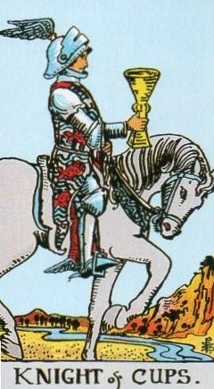
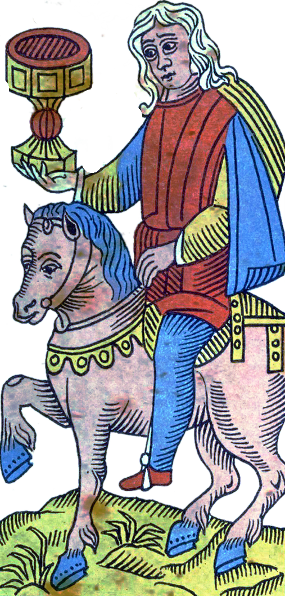
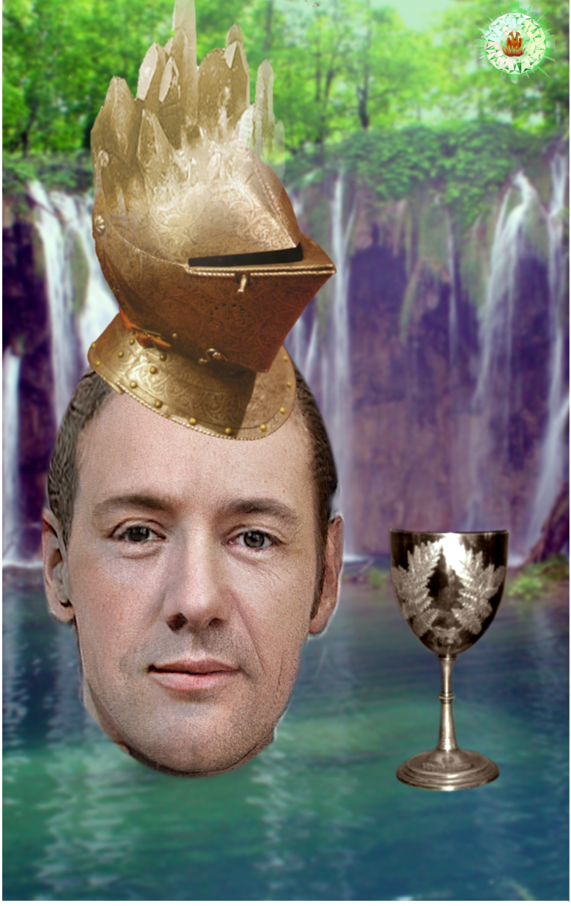
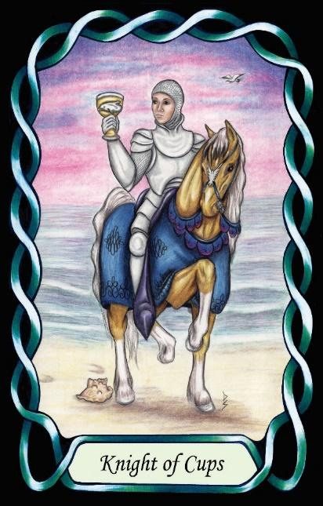

Knight of Cups
The Promoter (ESTP – SeTi)




Knight |
Concrete utilitarian |
||
Social, political |
|||
Extroverted Sensing Introverted Thinking |
|||
4.3% of population |
|||
Example: Winston Churchill, Kevin Spacey |
|||
Meaning of Life: New Experiences |
|||
Astrology: Cancer |
|||
Knights of Cups are charismatic, adaptable realists who bring concrete action into the social and emotional domain. As ST Knights, they are grounded, practical, and focused on immediate results. Their extroverted sensing gives them a sharp awareness of their environment and the people within it. They read situations quickly, respond instinctively, and excel in fast-moving, high-pressure contexts.
Their introverted thinking provides a cool, analytical core beneath their outward charm. They evaluate situations logically, spotting opportunities, weaknesses, and leverage points with precision. This combination of Se and Ti makes them persuasive, strategic, and highly effective in interpersonal arenas where timing, confidence, and tactical intelligence matter.
Placed in the Water suit of Cups, their natural realism becomes directed toward social influence. They are the negotiators, deal-makers, and persuaders of the Cups domain — individuals who can navigate complex emotional landscapes while remaining grounded in practical outcomes. They excel at motivating others, rallying support, and shaping group dynamics through presence and charisma.
Knights of Cups thrive in roles that require quick thinking, adaptability, and interpersonal skill. They are at their best when engaging directly with people, whether in leadership, diplomacy, advocacy, or high-stakes negotiation. Their strength lies in their ability to connect, persuade, and act decisively in the moment.
At their core, they seek new experiences. Their meaning in life is found in exploring possibilities, testing themselves against the world, and engaging fully with the richness of human interaction. They are the Promoters of the Cups suit — dynamic, influential, and driven to make things happen through direct engagement with people and situations.